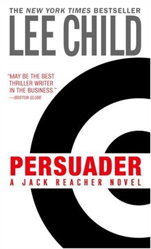

|  |
Persuaderby Lee ChildNever forgive, never forget. That’s Jack Reacher’s standard operating procedure. And Francis Xavier Quinn was the worst guy he had ever met. He had done truly unforgivable things. So Reacher was glad to know he was dead. Until the day he saw him, alive and well, riding in a limousine outside Boston’s Symphony Hall. Never apologize. Never explain. When Reacher witnesses a brutal attempt to kidnap a terrified young student on a New England campus, he takes the law into his own hands. That’s his way, after all. Only this time, a cop dies, and Reacher doesn’t stick around to explain. Has he lost his sense of right and wrong? Just because, this time, it’s personal? |